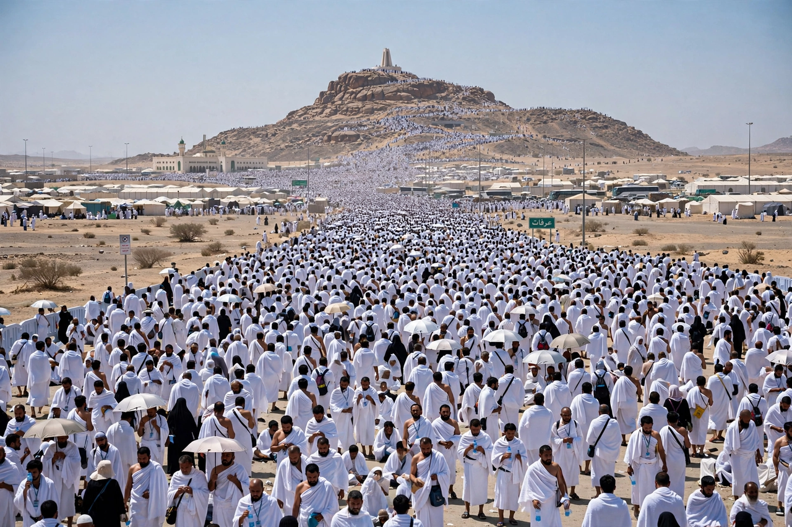

From Wikipedia, the free encyclopedia
| Dhu al-Hijjah | |
|---|---|
 Pilgrims at Arafat, 9 Dhu al-Hijjah | |
| Arabic | ذُو الْحِجَّة (Ḏū al-Ḥijjah, "Possessor of the Pilgrimage") |
| Position | Twelfth month of the Islamic calendar |
| Key days | 8th: start of Hajj; 9th: Day of Arafah; 10th: Eid al-Adha |
| Sacred months | One of the four sacred months (al-ashhur al-ḥurum) |
Dhu al-Hijjah (Arabic: ذُو الْحِجَّة, Ḏū al-Ḥijjah) is the twelfth and final month of the Islamic lunar calendar, the month in which the Hajj pilgrimage to Mecca takes place. Its name means "Possessor of the Pilgrimage." It is one of the four sacred months in which warfare was traditionally prohibited, and its first ten days are regarded in Islamic tradition as among the most blessed days of the year.
The Hajj rites run chiefly from the 8th to the 13th of the month: pilgrims enter the state of ihram, proceed to Mina, and on the 9th — the Day of Arafah, the climax of the pilgrimage — stand in prayer on the plain of Arafat from noon to sunset. After sunset they move to Muzdalifah, then return to Mina for the symbolic stoning of the pillars. Millions of Muslims undertake the journey, having prepared with the purifications of which wudu is the everyday form, and pray in Mecca facing the same qibla used worldwide.
On the 10th of Dhu al-Hijjah, Muslims worldwide celebrate Eid al-Adha, the Feast of the Sacrifice, commemorating Abraham's willingness to sacrifice his son in obedience to God, and God's provision of a ram in his place. Families that can afford it sacrifice a sheep, goat, cow, or camel, sharing the meat with relatives, neighbours, and the poor; the festival continues for three to four days. Those not on Hajj are encouraged to fast on the Day of Arafah.
Tradition extols the first ten days of Dhu al-Hijjah: the Prophet is reported to have said that no days are more beloved to God for righteous deeds than these. Many Muslims increase prayer, charity, Quran recitation, and fasting during them — an annual focus of devotion comparable, in a shorter span, to Ramadan, and part of the lived practice of islam as the Hadith of Gabriel defines it.